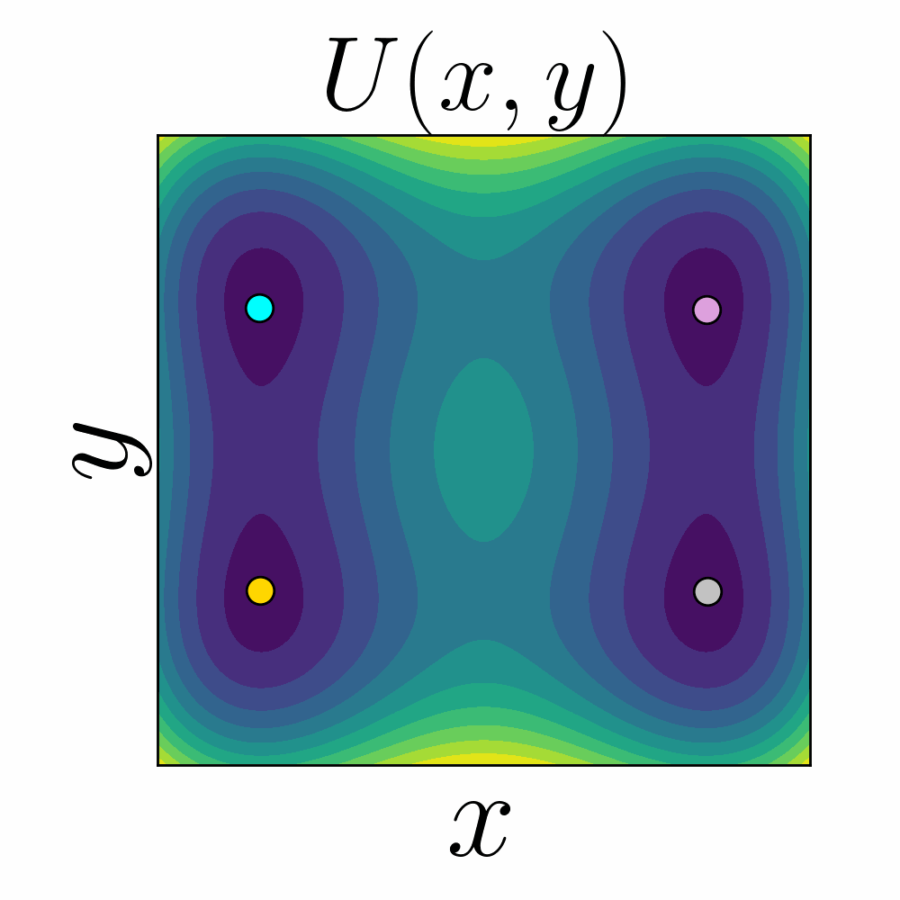

|
Christian Pratt I'm currently a fourth year physics PhD student in the Complexity Sciences Center at UC Davis. |
{kind=link}
ResearchWhat is the fundamental physics of computation? I am using tools from dynamical systems theory and nonequilibrium thermodynamics to help move towards answering this question. Specifically, my research explores the physics of information processing and storage with the metastable potential energy landscapes that are generated by superconducting devices. |
|

|
Christian Z. Pratt, Kyle J. Ray, and James P. Crutchfield Pending publication. 2024 arXiv We introduce the Control Erase (CE) protocol, which generalizes the Landauer information erasure protocol to an effective two-dimensional potential energy landscape. An example CE protocol involves moving the gold particle to the cyan particle's location, while keeping the silver and pink particle locations fixed. These particles lie within the landscape's minima, whose depths dynamically change according to how we carry out the protocol. We find that executing successive CEs can lead to performing a NAND gate---an irreversible universal logic gate that is commonly used to construct modern computing architectures. We show how to implement a NAND gate with a device created by inductively-coupling two superconducting quantum interference devices (SQUIDs): This device can serve as a computationally fast and energy efficient universal computing substrate! ~ |
 |
Christian Z. Pratt, Kyle J. Ray, and James P. Crutchfield Pending publication. 2023 arXiv Previously, the network theory approach for analyzing superconducting circuits had limitations, such as only being able to consider at most one linear inductor per circuit loop. We void this assumption and address its consequences, and by doing so, we extended this approach to be able to handle more complicated superconducting circuits. In particular, we derived the potential energy surface generated by a device constructed from two inductively-coupled SQUIDs. This landscape will serve as a test-bed for constructing energy efficient universal logic gates, and investigating their thermodynamic performance. |
Recorded Talks |
 |
Complexity Sciences Center Aug. 14th, 2024 Link Technical seminar about the paper in the talk's title; its focus was to build up the intuition required for understanding the paper from scratch via figures and animations. For example, by showing how the Landauer protocol can be understood with bifurcation theory, this geometric perspective significantly helps with understanding more general information erasure protocols. |
|
|